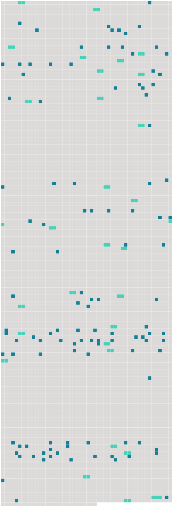

Longueur nb maillons : 143 mentions |
 |
Melchior faisait un enfant à [sa femme] chaque année, sans s’ inquiéter de ce qui en arriverait plus tard. [3 phrases]
[Louisa] , forcée de sortir, les confiait à Christophe, qui avait maintenant six ans. [2 phrases] Il amusait de son mieux les petits, en leur montrant ses jeux ; et il s’ appliquait à leur parler, comme il avait entendu [sa mère] causer avec le bébé. [7 phrases] Ernst hurlait pour rien ; il trépignait, il se roulait de colère : c’ était un enfant nerveux, et [Louisa] avait recommandé à Christophe de ne pas contrarier ses caprices. [1 phrases]
Si bien que lorsque [Louisa] rentrait, au lieu de complimenter Christophe, [elle] lui disait, sans le gronder, mais d’ un air chagrin, en voyant les dégâts : [1 phrases] [Louisa] , [qui] ne laissait échapper aucune occasion de gagner un peu d’ argent, continuait à se placer comme cuisinière dans les circonstances exceptionnelles, les repas de noces ou de baptême. Melchior feignait de n’ en rien savoir : cela froissait son amour-propre ; mais il n’ était pas fâché qu’ [elle] le fît, sans qu’ il le sût. [3 phrases] Ce jour -là, [sa mère] lui avait mis ses habits les plus propres, de vieux habits donnés, dont l’ ingénieuse patience de [Louisa] avait su tirer parti. Il alla [la] rejoindre, comme [elle] le lui avait dit, dans la maison où [elle] travaillait. [6 phrases] – [C’] est [ta mère] ?? [1 phrases]
Tu trouveras [Louisa] à la cuisine, au fond du corridor. Il alla, de plus en plus rouge ; il avait honte d’ entendre appeler [sa mère] familièrement : Louisa. [2 phrases] Au fond, près des fourneaux, [sa mère] lui souriait d’ un air tendre et un peu gêné. Il courut à [elle] et se jeta dans [ses] jambes. [Elle] avait un tablier blanc et [tenait] une cuiller en bois. [Elle] commença par ajouter à son trouble, en voulant qu’ il levât le menton, pour qu’ on vît sa figure, et qu’ il allât tendre la main à chacune des personnes qui étaient là, en leur disant bonjour. [3 phrases] [Sa mère] avait un air affairé et important, qu’ il ne lui connaissait pas ; [elle] allait d’ une casserole à l’ autre, goûtant, donnant [son] avis, expliquant d’ un ton sûr des recettes, que la cuisinière ordinaire écoutait avec respect.
Le cœur de l’ enfant se gonflait d’ orgueil, en voyant combien on appréciait [sa mère] , et quel rôle [elle] jouait dans cette belle pièce, ornée d’ objets magnifiques d’ or et de cuivre qui brillaient. [7 phrases] De quel ton sec et cassant elle parlait à [Louisa] !! Et comme [Louisa] lui répondait humblement!! [2 phrases] La dame demanda qui était ce petit garçon ; [Louisa] vint le prendre et le présenter ; [elle] lui tenait les mains pour l’ empêcher de se cacher la figure ; et, bien qu’ il eût envie de se débattre et de fuir, Christophe sentit d’ instinct qu’ il fallait cette fois ne faire aucune résistance. [2 phrases] Elle regarda aussi comment les vêtements allaient ; et [Louisa] s’ empressa de montrer qu’ ils étaient superbes. [Elle] tirait le veston, pour effacer les plis ; Christophe avait envie de crier, tant il était serré.
Il ne comprenait pas pourquoi [sa mère] remerciait. [1 phrases]
Christophe jeta un regard désespéré sur [sa mère] ; mais [elle] souriait à la maîtresse d’ un air si empressé qu’ il vit qu’ il n’ y avait rien à espérer, et il suivit son guide, comme un mouton qu’ on mène à la boucherie. [19 phrases] Il crut combattre victorieusement cette opinion injurieuse, en bredouillant d’ une voix étranglée qu’ il était le fils de Melchior Krafft, et que [sa mère] était [Louisa] , la cuisinière. [46 phrases] Pour achever de l’ accabler, [Louisa] , qu’ on avait appelée, parut ; et, au lieu de le défendre, [elle] commença par le claquer, [elle] aussi, avant de rien savoir, et voulut qu’ il demandât pardon. [1 phrases] [Elle] le secoua plus fort et le [traîna] par la main vers la dame et les enfants, pour qu’ il se mît à genoux. Mais il trépigna, hurla, et mordit la main de [sa mère] [6 phrases] Puis, il pensa que son père allait rentrer, que [sa mère] raconterait tout et que ses malheurs n’ étaient pas près de leur fin. [12 phrases] L’ enfant se mit à pleurer, et Melchior à crier, de plus en plus fort l’ un et l’ autre, jusqu’ à ce qu’ on entendît le pas précipité de [Louisa] , [qui] montait l’ escalier. [Elle] arriva, toute bouleversée encore. [Elle] commença par de violents reproches, mêlés de nouvelles gifles, auxquelles Melchior joignit, sitôt qu’ il eut compris, – et probablement avant, – des claques à assommer un bœuf. [4 phrases] Et tout en frappant l’ enfant, [Louisa] criait à [son] mari qu’ il était un brutal, qu’ [elle] ne lui permettait pas de toucher le petit, et qu’ il l’ avait blessé. En effet, Christophe saignait un peu du nez ; mais il n’ y pensait guère, et il ne sut aucun gré à [sa mère] de le lui tamponner rudement avec un linge mouillé, puisqu’ [elle] continuait à le gronder. [2 phrases] Il lui semblait que c’ était [sa mère] ; car il n’ eût jamais attendu d’ elle une pareille méchanceté. [11 phrases] [Sa mère] le déshabilla, le [porta] dans son lit, s’ assit à son chevet et [resta] auprès de lui, jusqu’ à ce qu’ il fût plus calme. [1 phrases] [Sa mère] lui semblait mauvaise et lâche.
Il ne se doutait pas de tout le mal qu’ [elle] avait pour vivre et le faire vivre, et de ce qu’ [elle] avait souffert de prendre parti contre lui. [34 phrases] Il causait bruyamment, riait aux éclats de ce qu’ il disait ; et il ne remarquait pas le regard de [sa femme] , [qui] riait d’ un rire forcé, en le surveillant, tandis qu’ il se servait. [1 phrases] [Louisa] servait les petits : deux pommes de terre à chacun. Lorsque venait le tour de Christophe, souvent il n’ en restait que trois sur l’ assiette, et [sa mère] n’ était pas servie. [1 phrases]
Alors il rassemblait son courage, et d’ un air dégagé :
[Elle] s’ inquiétait un peu. [1 phrases]
– Non, je [t’] en prie, une seule. [2 phrases] Mais [elle] n’ en prenait qu’ une aussi, et ils la pelaient avec soin, ils la partageaient en tout petits morceaux, ils tâchaient de la manger le plus lentement possible. [Sa mère] le surveillait. [1 phrases]
– Non, [maman] [15 phrases] Mais il ne se plaignait pas ; il se sentait observé par [sa mère] , et il prenait un air indifférent. [Louisa] , le cœur serré, comprenait vaguement que [son] petit garçon se privait de manger, pour que les autres eussent davantage ; [elle] repoussait cette pensée ; mais [elle] y revenait toujours. [Elle] n’ osait pas l’ éclaircir, demander à Christophe si c’ était vrai ; car, si ç’avait été vrai, qu’ aurait [-elle] pu faire?? [Elle -même] était habituée aux privations, depuis qu’ [elle] était petite. [1 phrases] [Elle] ne se doutait pas, il est vrai, avec [sa] frêle santé et [son] peu de besoins, que l’ enfant dût souffrir davantage. [Elle] ne lui disait rien ; mais, une ou deux fois, quand les autres étaient sortis, les enfants dans la rue, Melchior à ses affaires, [elle] priait [son] aîné de rester, pour lui rendre quelque petit service. Christophe [lui] tenait sa pelote, tandis qu’ [elle] la dévidait. Brusquement, [elle] jetait tout, et l’ [attirait] passionnément à [elle] ; [elle] le mettait sur [ses] genoux, quoiqu’ il fût déjà bien lourd ; [elle] le serrait.
Il [lui] passait avec violence ses bras autour du cou, et ils pleuraient tous deux, en s’ embrassant comme des désespérés. – [Mon] pauvre petit garçon!!
… [5 phrases] Il disait des inepties, chantait à tue-tête pendant des heures, en tapant sur la table ; et parfois, il voulait à toute force danser avec [Louisa] et avec les enfants. Christophe voyait bien que [sa mère] avait l’ air triste ; [elle] se retirait à l’ écart, et [baissait] le nez sur [son] ouvrage ; [elle] évitait de regarder l’ ivrogne ; et [elle] tâchait doucement de le faire taire, quand il disait des grossièretés qui [la] faisaient rougir. [2 phrases] Il riait de tout son cœur des gestes grotesques et des plaisanteries stupides de Melchior ; il chantait et dansait avec lui ; et il trouvait très mauvais que [sa mère] , d’ une voix fâchée, lui ordonnât de cesser. [10 phrases] [Louisa] lavait le linge, au fleuve. [43 phrases] Il resta dans cet état affreux, un siècle, à ce qu’ il lui parut, – jusqu’ à ce que la porte s’ ouvrît et que [Louisa] entrât, un panier de linge à la main.
[Elle] poussa un cri, [laissa] tomber le panier, se [précipita] vers Christophe, et avec une violence que nul ne [lui] aurait crue, [elle] l’ arracha des bras de Melchior : [1 phrases]
cria-t [-elle]
[Ses] yeux flambaient de colère. Christophe crut que son père allait [la] tuer. Mais Melchior fut si saisi par l’ apparition menaçante de [sa femme] qu’ il ne répliqua rien et se mit à pleurer. Il se roula par terre ; et il se frappait la tête contre les meubles, en disant qu’ [elle] avait raison, qu’ il était un ivrogne, qu’ il faisait le malheur des siens, qu’ il ruinait ses pauvres enfants, et qu’ il voulait mourir. [Louisa] lui avait tourné le dos avec mépris ; [elle] emportait Christophe dans la chambre voisine, [elle] le caressait, [elle] cherchait à le rassurer. Le petit continuait de trembler, et il ne répondait pas aux questions de [sa mère] ; puis il éclata en sanglots. [Louisa] lui baigna la figure avec de l’ eau ; [elle] l’ embrassait, [elle] lui parlait tendrement, [elle] pleurait avec lui. [1 phrases] [Elle] s’ agenouilla, le [mit] à genoux auprès d’ [elle] [1 phrases] [Louisa] coucha l’ enfant. Il voulut qu’ [elle] restât près de son lit, à lui tenir la main. [Louisa] passa une partie de la nuit, assise au chevet de Christophe qui avait la fièvre. [7 phrases] Le lendemain matin, quand [sa mère] lui rappela qu’ il était l’ heure de partir, il répondit avec tranquillité qu’ il avait dit qu’ il n’ irait plus. [Louisa] eut beau prier, crier, menacer : rien n’ y fit. [11 phrases] Ils sortaient, quelque temps qu’ il fît, été comme hiver, restaient pendant des heures sous la pluie ou le soleil, quelquefois tête nue et les vêtements ouverts, par négligence ou par bravade, faisaient des lieues sans jamais être las, et regardaient avec une pitié méprisante [la pauvre Louisa] , [qui] ne disait rien, mais [qui] était forcée de s’ arrêter, toute blanche, les jambes gonflées, et le cœur battant à se briser. Christophe n’ était pas loin de partager leur dédain pour [sa mère] : il ne comprenait pas qu’ on fût malade ; quand il tombait, ou se frappait, ou se coupait, ou se brûlait, il ne pleurait pas ; mais il était irrité contre l’ objet ennemi. |
 |
La ressource peut être téléchargée sur la page Ortolang
Si vous avez des questions ou vous voyez des erreurs, merci d'envoyer un mail à silvia.federzoni89@gmail.com
Site développé par S. Federzoni (contact)